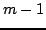

Usage
linearDependence(gen,n)
Signature
linearDependence: (Generator Vector R, MachineInteger) Vector R
| Parameter | Type | Description |
|---|---|---|
| gen | Generator Vector R | A generator of vectors |
| n | MachineInteger | The dimension of the vectors generated |
Description
Returns a vector v which contains the coefficients of a dependence relation among the vectors generated by gen. The relation is as small as possible, meaning that if v has dimension m then the first  vectors generated are independent. The dimension of the vectors generated by gen must be n. There must be a relation between the vectors generated.